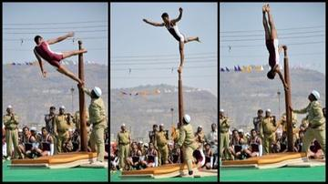

The Road to Lanka is an Arcforge story adventure drawn from the ancient Sanskrit epic storytelling tradition of South Asia: a prince's long journey south to an island kingdom, told chapter by chapter.
How it is played
The player follows the road from the forest exile to the final crossing of the sea, meeting allies and rivals from the epic in turn, with choices at each halt that change how the story is told.
Heritage note
An Arcforge original, created for the World Heritage Games collection rather than drawn from one tradition.
Origins
Usually placed in the era of Modern Heritage (1800 to today), within the cultural world of South Asia.
Play it
Related entries





More from India

Bandhani tie-dye
India · Crafts and making
Bansuri bamboo flute
India +1 · Musical instrumentsPlay preview · in the Music & Dance of the World app
Blacksmith's Forge
United Kingdom +4 · Crafts and making


Chamba rumal embroidery
India · Crafts and making